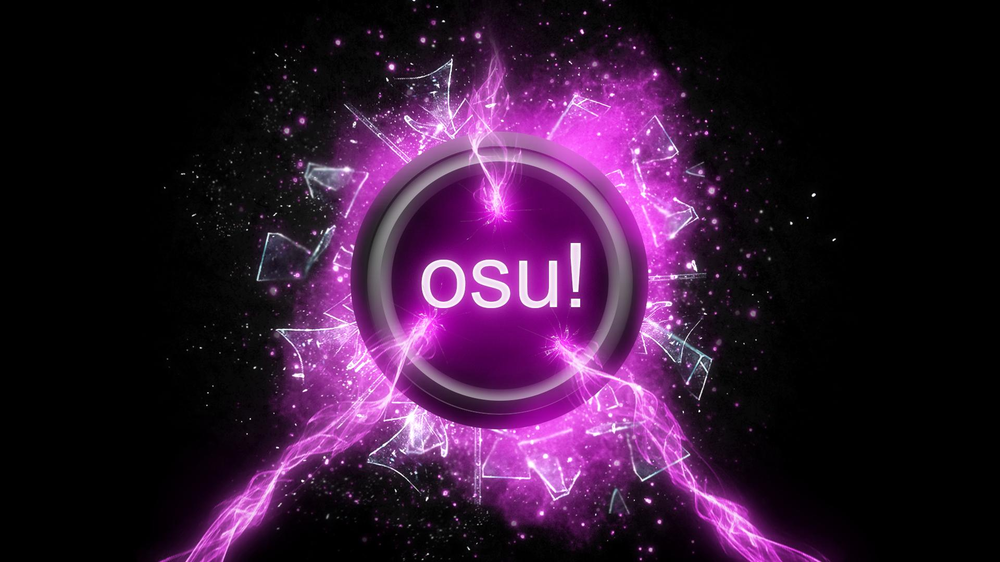
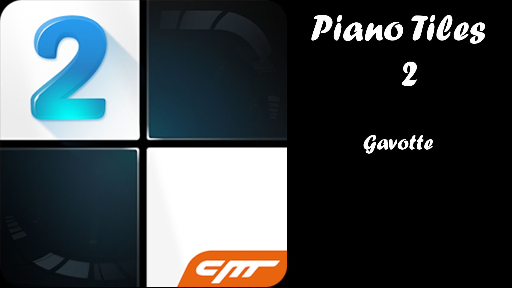
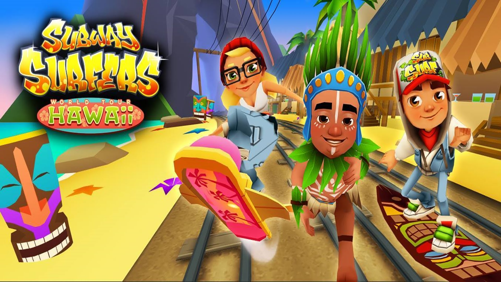
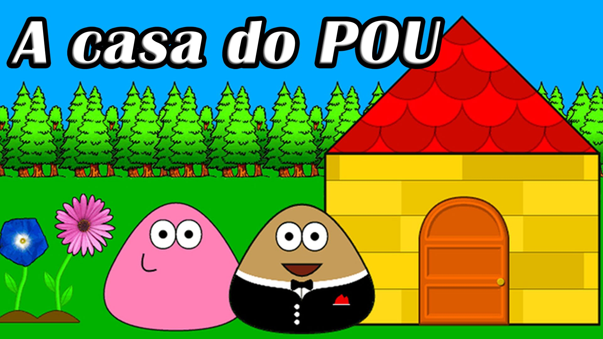
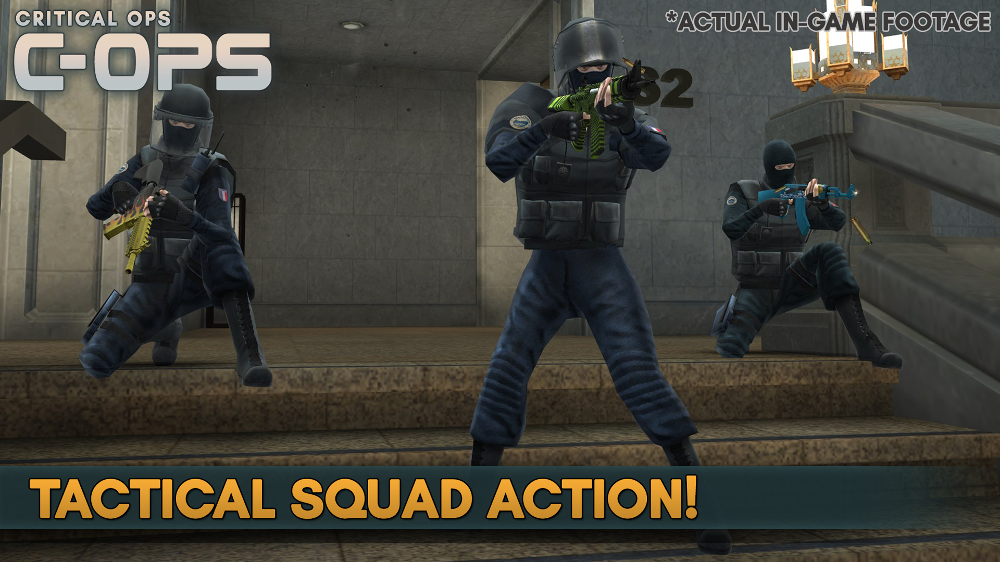

Osu! To bezpłatna gra rytmiczna przeznaczona na platformę PC. Początki gry sięgają roku 2007, od tego czasu program został mocno rozbudowany, posiada wiele trybów i opcji dostosowania rozgrywki do własnych preferencji. Istotą gry jest uruchamianie wybranych utworów muzycznych za pomocą zaprojektowanych w tym celu map (beatmap). Mapy utworzone są za pomocą różnego rodzaju punktów, które są oznaczone kolorami i odpowiednio ponumerowane. Istotą gry jest kliknięcie w odpowiedni punkt na mapie w czasie kiedy pojawia się wokół niego osobny okrąg. Brzmi banalnie, lecz takie nie jest.

Piano Tiles to seria dość specyficzna, jednak nie da się jej odmówić uroku i magii, która do niej przyciąga. To coś pomiędzy wyjątkowo szybką zręcznościówką, a grą rytmiczną. Bo, co prawda, stukamy tam do rytmu, jednak to nie on gra główną rolę — nie musimy przejmować się tym, ze gdy nie uderzymy idealnie w takt, nie dostaniemy maksymalnej ilości punktów. To tytuł, w którym sztuka jest sztuka — ważne, by stukać i przytrzymywać palcem tylko na czarnych polach, starannie omijając całą resztę.

W zręcznościowej grze Subway Surfers wcielacie się w małych łobuziaków, które próbują malować graffiti na pociągach, co za każdym razem kończy się dla nich szaloną ucieczką po torach przed strażnikiem kolei i jego psem. W trakcie waszej gonitwy będziecie mogli zbierać po drodze monety, za które kupicie potem nowe postaci, stroje, latające deski i różne ułatwienia w grze. To przy ich użyciu zwiększycie swoją szansę na osiągnięcie jeszcze lepszych wyników.

Czy potrafisz zaopiekować się swoim pupilem? Karm, kąp go, graj i baw się z nim. Oglądaj jak rośnie i zdobywa kolejne poziomy dzięki , którym odblokuje nowe tapety i stroje. Jak ty zadbasz o swojego POU? W grze jest dostępne mnóstwo minigier dzięki którym zarabia się walutę, potrzebną do kupowania coraz to nowszych stroi dla swojego pupilka.

Critical Ops to dynamiczny FPS, silnie inspirowany dokonaniami studia Valve. Stąd też bywa określany mianem mobilnej odpowiedzi na Counter-Strike: Global Offensive. Grę stworzyło fińskie studio Critical Force Entertainment, mające już w dorobku podobną produkcję, zatytułowaną Critical Strike Portable. Tytuł zadebiutował wstępnie w wersji alfa w 2015 roku, po czym był systematycznie rozwijany i rozbudowywany o nowe opcje. Jest oferowany w przemyślanym modelu darmowym z opcjonalnymi mikropłatnościami.